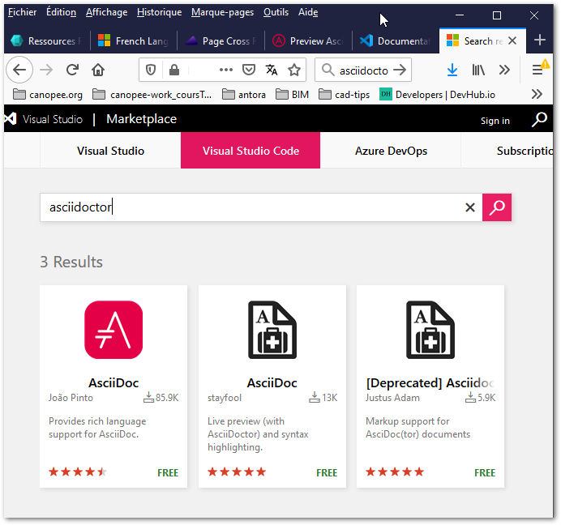

Visual Studio Code
Visual Studio Code est un éditeur de texte est bourré de fonctionalités dépassant de loin l’édition de ressources au formats asciidoc!
Son gros avantage réside dans la possibilité d’avoir un panneau de pré-visualisation permettant de se donner une idée de ce à quoi cela pourrait ressembler une fois le fichier .adoc compilé vers un fichier .html ou .pdf.
| Visual Studio Code est addictif… on y passe des heures… Vous aurez étés prévenus! |
Installation
-
se rendre sur le site web de Visual Studio Code (clic sur le lien précédent ou sur l’image suivante pour ouvrir un autre onglet).
-
cliquez sur Download for Windows pour télécharger la dernière version adaptée
-
double-cliquez pour installer en suivant les instructions
Bonnes pratiques / Configuration
Ci-dessous quelques infos utiles pour éditer des ressources au format Asciidoc avec Visual Studio Code
Configuration initiale
-
effectuer la recherche sur google avec ces mots clés
francisation vscode -
on tombe sur la page de VSCode Market Place nous proposant d’installer le French Language Pack for Visual Studio Code
-
yapluka cliquer et suivre les directives …
-
en redémarrant Visual Studio Code il devrait être en français
-
F1 ouvre la "palette" de commande
-
tapez
ext install asciidoctor-vscode -
on peut aussi installer un
plugindepuis internet, le Market place Visual Studio Code . Voici ce qu’une recherche avec le termeasciidocdonne (image à cliquer) : 
Bonnes pratiques
→ idem Sublime Text : voir le tuto Mise en forme englobante
-
idem Sublime Text : sélection texte → Ctrl+D successif → édition simultanée des zones sélectionnées
-
en 3 parties (de la gauche vers la droite) :
panneau explorateur → panneau éditeur → panneau prévisualisation -
voir l’image ci-dessous (image à cliquer pour zoom)
Figure 1. Aperçu de Visual Studio Code éditant la page actuelle
{kind=link}
-
affichage panneau latéral extensions Ctrl+Maj+X ou icône "cubes"
-
aller à Asciidoc & clic sur la petite roue de config en bas à droite
-
un onglet dans Visual Studio Code s’ouvre :
-
cliquer sur l’onglet Utilisateur en haut (réglages pour l’utilisateur)
-
dans la liste des réglages, descendre à
Asciidoc:Preview>Use Editor Style& décocher cette option -
faire de même dans l’onglet Espace de travail
-
|
Visual Studio Code n’est pas évident à configurer car ses capacités sont très vastes (à l’images d’un logiciel de DAO "objet" BIM…) :
Stratégie édition ressources :
|